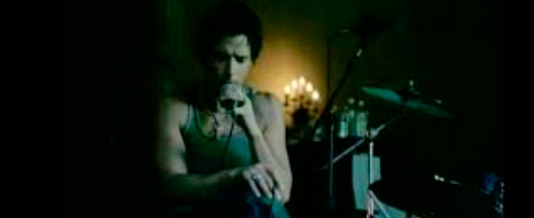

Música
Like Stone
Letra
On a cobweb afternoon In a room full of emptiness By a freeway I confess I was lost in the pages Of a book full of death Reading how we'll die alone And if we're good, we'll lay to rest Anywhere we want to go
In your house, I long to be Room by room, patiently I'll wait for you there Like a stone I'll wait for you there Alone